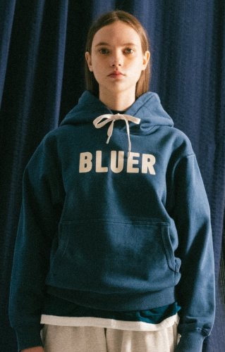
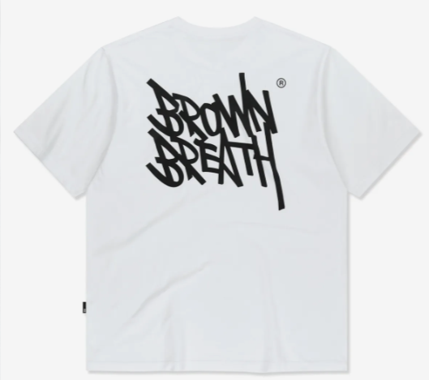
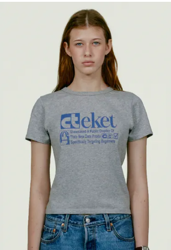

[ 3 / 3 ] 브랜드별 대표 티셔츠/로고 상품 보드
브랜드별 시그니처 티셔츠 구조
대표작 사례는 “하나의 인지 장치를 반복한다”는 근거로 사용합니다. 테켓/네이머/브라운브레스 이미지는 전달받은 레퍼런스로 교체했습니다.



브라운브레스
SIGNATURE LOGO
TAG TEE / 로고 그래픽 티셔츠
브라운브레스는 태그/로고 그래픽을 반복해 상품군을 만듭니다. 한 장치가 계속 반복되면 시그니처가 됩니다.
WA2702 적용: ST02 라벨, ST03 시즌 라벨은 1부위만 써도 충분히 브랜드 장치가 됩니다.



예일
ARCH LOGO
2 Tone Arch T-shirt / Arch Hoodie
아치 로고는 대중성이 높고 안정적입니다. 컬리지 무드가 있어 티셔츠/후디/스웻까지 확장하기 쉽습니다.
WA2702 적용: ST03 센터 로고는 아치와 일자 샘플을 비교해 결정합니다.

커버낫
SYMBOL BASIC
C 로고 티셔츠
작은 심볼 하나를 장기간 반복해 기본물 자산으로 만든 사례입니다.
WA2702 적용: 키키/WA/워드로고 중 품번별 하나를 명확히 반복해야 대표작이 됩니다.
이미지/근거 출처: 전달 이미지, Musinsa, Global Musinsa, END., Brownbreath, 29CM, W Concept, Satur, Covernat.